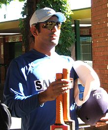

PLAYING STYLE
✌Dhoni is a right-handed batsman and wicket-keeper. Dhoni is an unorthodox batsman. He deviates from conventional coaching manuals and showcases his unique batting technique. Dhoni displays a proclivity for hitting full-length deliveries towards the Long-on, Long-off, and Midwicket regions, rather than the conventional Cover region
✌Furthermore, he demonstrates remarkable skill in playing pull shots and hook shots off short-pitched deliveries, putting pressure on the bowler to adjust their line and length accordingly. Dhoni holds the bat with a firm grip at the bottom of the handle, striking the ball with force and precision to clear the boundary. Despite this, he still retains the capability to produce awe-inspiring, long sixes.
He is known for his unorthodox captaincy and cool-headed demeanor on the field. As a batsman, he is recognized for his remarkable finishing skills in high-pressure situations, and his aggressive captaincy has earned him the reputation of a successful leader in Indian cricket. He has also been renowned for his lightning-fast glove-work behind the stumps.
✌Initially, Dhoni appeared as a lower-order attacking batsman but he gradually changed his playing style to deal with high-pressure scenarios and his growing responsibility as a captain. He is a powerful hitter of the ball and is one of the fastest men in running between the wickets. He made use of the helicopter shot technique,taught to him by a fellow player and childhood friend Santosh Lal.
✌His wicket-keeping skill is widely praised by cricket experts but also criticised for lack of good technique.He has a world record for the highest number of stumpings by any wicket-keeper
✌As a captain, Dhoni was approachable to players. Former cricketers and opposition players underline that his behaviour on cricket ground was calm and composed. He used to allow his bowlers to set field for themselves